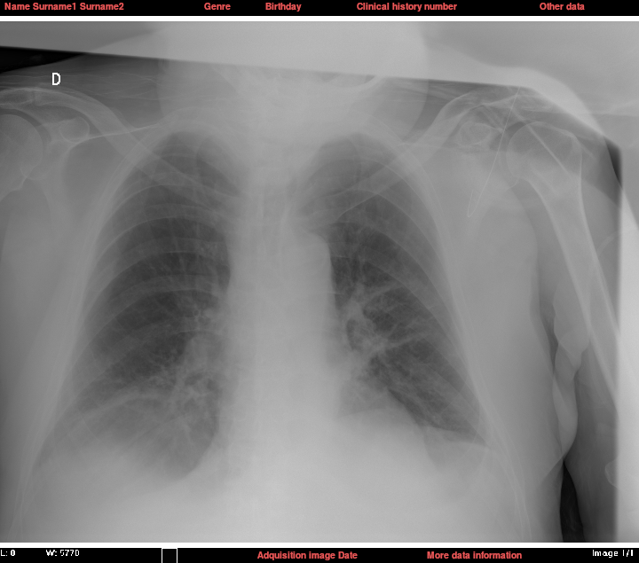
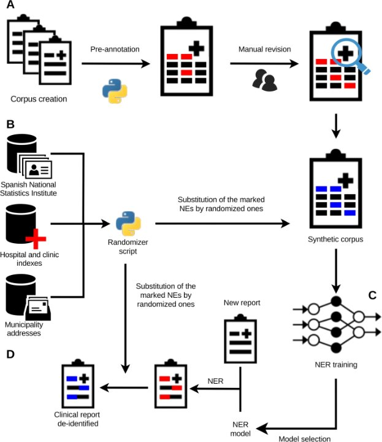
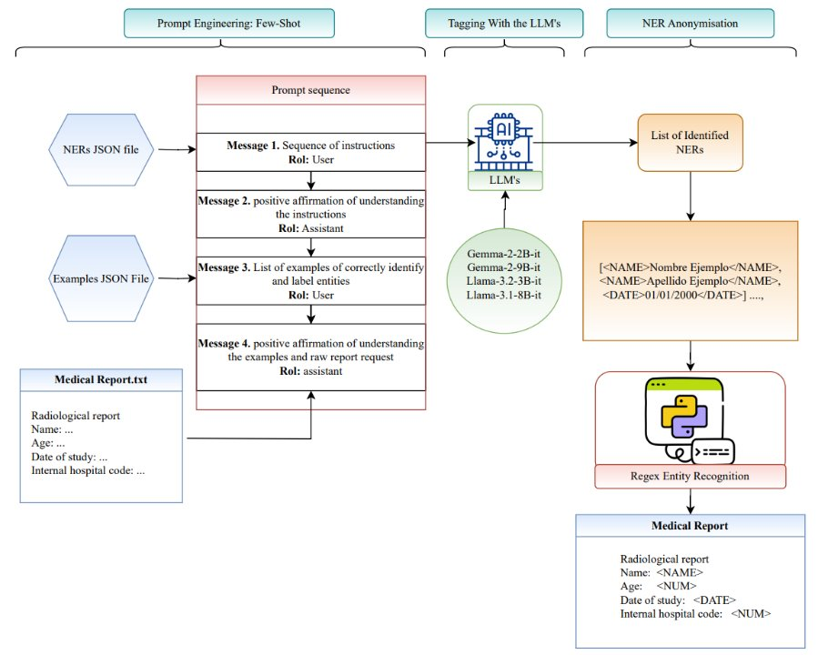
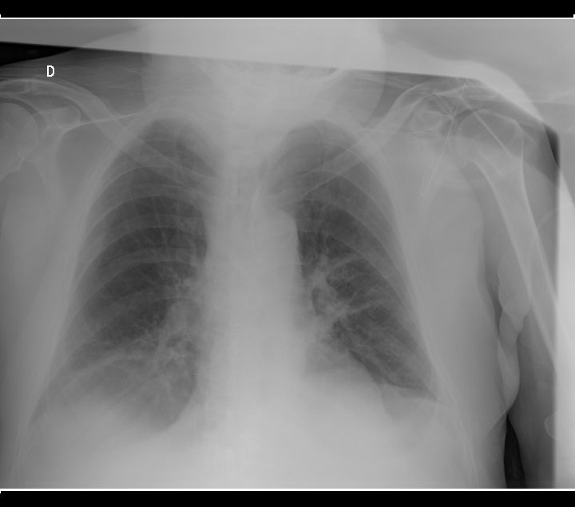
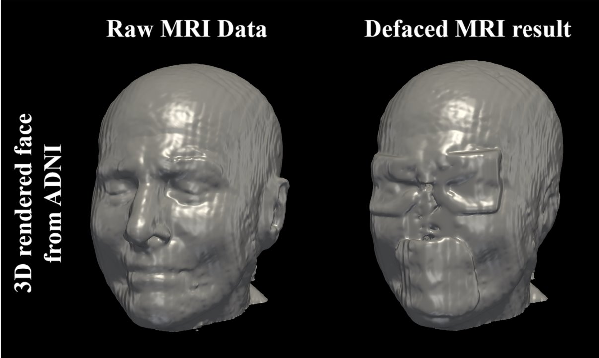

Anonimización y seudonimización
Todas las imágenes médicas que procesamos cumplen el estándar DICOM. Aplicamos una regulación común para anonimizar/seudonimizar la imagen, los metadatos y los informes clínicos, utilizando la red ARTERIAS en BIMCV.
Todas las imágenes médicas que procesamos cumplen el estándar DICOM. Aplicamos una regulación común para anonimizar/seudonimizar la imagen, los metadatos y los informes clínicos, utilizando la red ARTERIAS en BIMCV.
PROYECTOS Y HERRAMIENTAS

Software libre de RSNA que cumple los requisitos del estándar DICOM para anonimizar metadatos. Admite instalación con un solo clic y múltiples etapas de procesamiento configurables: importación HTTP/DICOM, reglas de anonimización y exportación HTTP(s)/DICOM/FTP(s).
Herramienta que orquesta la carga de archivos DICOM en XNAT: busca las imágenes en el directorio de origen, las limpia y descomprime, las envía a CTP para su anonimización y, una vez seguras, las sube a BIMCV a través de la red ARTERIAS Net. Soporta carga individual, por lotes, por departamento o de varios proyectos a la vez.
01 · PACS
Un administrador de datos selecciona los estudios a cargar desde la estación PACS.
02 · SMART-UPLOAD
Script en bash que busca las imágenes DICOM, las limpia y las descomprime antes de enviarlas a CTP.
03 · CTP
Anonimiza los metadatos según reglas configurables; si la desidentificación falla, el estudio se pone en cuarentena y no se sube. Todo esto ocurre dentro de la red segura ARTERIAS Net.
04 · XNAT
Ya fuera de ARTERIAS Net, los datos anonimizados llegan a BIMCV y quedan organizados por proyecto.
Dos generaciones de la misma idea: anonimizar informes radiológicos en español mediante Reconocimiento de Entidades Nombradas (NER) y sustituir lo sensible por datos sintéticos indistinguibles de los reales. DiSMed (Pérez-Díez et al., 2021) entrena y compara 4 arquitecturas NER sobre un corpus propio de BIMCV. DiSMed-LLM (Alzate-Grisales et al., 2025) prescinde del entrenamiento y evalúa 4 LLMs generalistas (Gemma-2, Llama 3) mediante prompt engineering few-shot, sobre los mismos bancos de pruebas.

DiSMed (2021)

DiSMed-LLM (2025)
Mismo test externo (MEDDOCAN), dos generaciones
81,1%
F1 · DiSMed
(LSTM-LSTM-CRF+EMA)
82,8%
F1 · DiSMed-LLM
(Gemma-2 9B)
Gemma-2 9B, sin haber visto un solo informe de MEDDOCAN, iguala a DiSMed y gana +12,5 puntos de recall (69,2 %→81,7 %). A cambio, alucina alguna entidad; los modelos grandes casi no lo hacen (Gemma-2 9B: 0 % en DiSMed, solo EMAIL en MEDDOCAN).
2D · MÁSCARAS PERSONALIZADAS
Antes

Después
Eliminación de anotaciones en texto sobre radiografías.
3D · ELIMINACIÓN FACIAL

Eliminación de información facial en resonancias cerebrales mediante Deep Learning.
Una vez anonimizado, el dato se organiza y estandariza en nuestros datalakes.